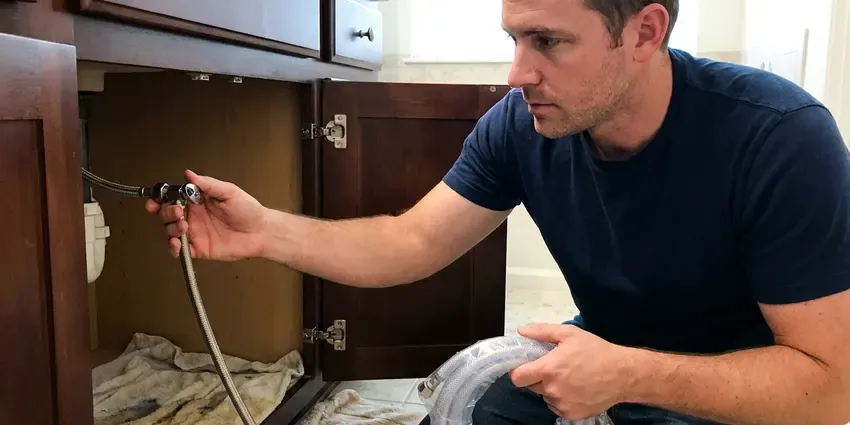
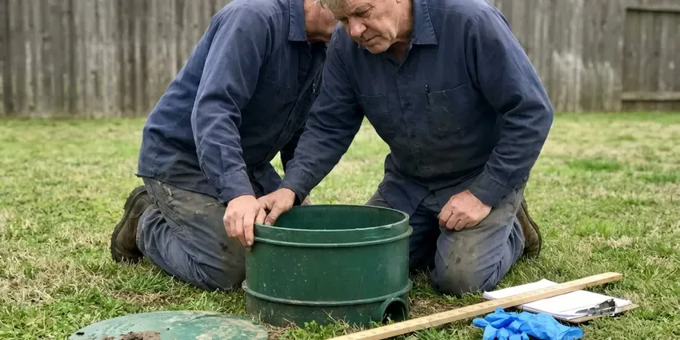

Plumbing Repair in Charleston, SC
Plumbing trouble in Charleston, SC never shows up at a good time. KBN Plumbing restores your water fast and cleans up after.
- Same-Day Visits
- Background-Checked Techs
- Same Day Appointments
- Licensed Plumbers

Clog or Leak in Charleston, SC?
Small valve or whole sewer line, we carry the parts.
Charleston, SC Plumbing Repair From Licensed Plumbers
KBN Plumbing works on the pipe South Carolina homes actually have, meaning galvanized steel in older houses, polybutylene in some 1980s builds and PEX in newer subdivisions. Every material has its own failure. We diagnose with cameras, pressure gauges and acoustic leak detection, then hand you a written price before a wrench comes out.
Our expertise includes:
- Clear and repair drain and sewer lines
- Acoustic and thermal leak detection for slab and wall leaks
- Diagnose well pumps, pressure tanks and water softeners

Additional Plumbing Repair Services in Charleston, SC
We offer expert plumbing repair services across Charleston, SC to stop leaks, clear blockages, and keep every fixture working the way it should.




Charleston water leak repair specialists

Charleston septic tank repair specialists

Customers
Why Choose KBN Plumbing for Plumbing Repair in Charleston, SC?
Plumbing problems rarely wait for a convenient time, so we keep stocked trucks on the road and a plumber on call every night of the week. You get a straight answer. What failed, what it costs and how long the repair will last, all before we start.
- Code Compliant, Permits are pulled when the job needs one, and every repair is done to code.
- Licensed Technicians, Every plumber is licensed and insured, and keeps up with current methods and safety rules.
- Stocked Vans, Valves, cartridges, heater parts and pipe ride on every truck, so most repairs are done the first trip.
Citywide Coverage
Wherever you are in Charleston, a plumber is a phone call away. KBN Plumbing has crews based nearby, so emergency response is measured in hours, not days.
Experienced Team
Specialists on the team handle leak detection and sewer camera work, so a tricky slab or lateral call goes to the person who does it every day. All of them pass a background check. Drop cloths and shoe covers go on before anyone walks through the house.
Safety-First Approach
Safety rules and South Carolina building codes are followed on every call at KBN Plumbing. Gas and sewer work get extra attention.
Trusted Certified Charleston Plumbing Services Professionals
At KBN Plumbing, we are proud to offer certified plumbing services throughout Charleston, SC. Credentials matter in this trade. Our plumbers hold recognized industry credentials, and they follow strict safety and quality rules on every repair, installation and maintenance call we run.
Call Us Now PHCC Plumbing Contractor Recognition
PHCC Plumbing Contractor Recognition Better Business Bureau (BBB) Accreditation
Better Business Bureau (BBB) Accreditation Angi Certified Pro
Angi Certified Pro ISO 9001 Quality Management Certification
ISO 9001 Quality Management CertificationPlumbing Repair Work We Do in Charleston, SC
Gas Pipe Repair in Charleston, SC
Leave the house first if you smell gas, and call the gas utility from outside. Once the utility clears it, we handle the repair. We pressure test the system, track the leak with an electronic detector and soap solution, and replace failed flex connectors, shutoff valves or corroded steel pipe. Nothing is relit until the test holds.

Under-Slab Line Repair in Charleston, SC
Homes built in the 1980s and early 1990s may still have gray polybutylene supply lines, which are known to fail and are worth replacing. Copper or PEX under the slab can run for decades until a fitting or a rubbed spot gives out. We find the leak with acoustic and thermal equipment, then lay out the repair options side by side with a price for each. Epoxy lining is one choice. Rerouting through the attic is often cleaner.
Water Leak Repair in Charleston
Hidden leaks sit inside walls, under sink cabinets and in the buried yard line that runs between the meter and the house. We narrow it down with a moisture meter and a thermal camera. We open just enough drywall or dirt to make the repair. Fixes include pinholed copper, failed PEX crimps, leaking hose bibs and worn shutoff valves.
Water Heater Valve and Element Repair in Charleston
Rumbling or popping from a tank means sediment on the bottom. A rotten-egg smell in the hot water usually means the anode rod is reacting with the water. We replace thermocouples, thermostats, elements, gas valves, anode rods and relief valves from truck stock, which covers the large majority of tank repairs we see in a year. A tank leaking at the seam is a different story. No part fixes that, and we tell you plainly.
24-Hour Plumbing Repair in Charleston
Night and weekend calls get the same plumbers who work our weekday jobs. KBN Plumbing runs emergency repair in Charleston around the clock for burst pipes, frozen lines, backed-up sewers and water heaters dumping water on the floor. Stopping the water comes first. Then comes the permanent repair, the same night if the parts are on the truck.
Tank and Tankless Water Heater Repair in Charleston
Tank and tankless heaters fail in different ways. KBN Plumbing repairs both, including the major brands, gas and electric. Tank calls usually come down to the thermocouple, the gas valve, an element or the anode. On a tankless unit, the culprit is often scale in the heat exchanger or a dirty inlet filter, so we flush and clean before swapping parts.
Gas Line Leak Repair in Charleston
Gas work is the one job no homeowner should try. Smell sulfur or hear hissing, and the right move is to walk out and call from the driveway. KBN Plumbing finds and fixes gas leaks in Charleston with a combustible gas detector, then pressure tests the line to code before the meter is turned back on. Flex connectors fail most often.

Well Pump Service in Charleston, SC
Submersible pumps sit well below the water line, so diagnosis happens at the surface first. KBN Plumbing checks the pressure switch, the control box capacitor and the tank precharge, then measures amp draw on the motor. A pump drawing high amps is wearing out. Jet pumps are simpler, and a lost prime or a bad foot valve is the usual cause when one stops moving water.
A Plumber Near You in Charleston, SC
Homes in South Carolina share common weak points, mainly pressure regulators that wear out and slab lines that move with the soil. We see those every day. The parts to fix them ride on every truck, which means fewer return trips for you and a repair that holds up for years.
Neighbors in Charleston call us about a weeping water heater or a toilet that will not stop running more than anything else. We fix those in homes across South Carolina every week. Fill valves and heater parts are already on board.
KBN Plumbing at a Glance
- Fully licensed plumbing team covering Charleston, SC
- Same-day appointments and 24/7 emergency response
- Clear written estimates, no hidden fees
- 4.8-star rated by 596+ South Carolina customers
Charleston Map
Charleston Information
- Population
- 155,369
- Area codes
- 843/443/803
- Service area
- Charleston and communities within 40 miles
- Nearby
- Mount Pleasant, North Charleston, Goose Creek, Summerville
Red clay dominates much of the upstate, while the coastal plain of South Carolina has sandy soil and a shallow water table that affects drainage and digging. Ground movement puts stress on buried supply and sewer lines in Charleston, SC, and scale builds up in valves at the same time. Catching both early keeps a small repair small.
Expert Services
Call KBN Plumbing for honest, reliable plumbing from people who know the trade in Charleston, SC.
Our Specialized Plumbing Services in Charleston, SC
At KBN Plumbing, we handle the full list of plumbing services across Charleston, SC. From leak detection to full system installs, our team works fast and charges fair prices on homes and commercial properties alike. Explore our core services below:


From Phone Call to Finished in Charleston, SC
Plumbing repair in Charleston, SC begins with finding the cause and ends with a test, not a guess.
Tell Us What Is Wrong
Call (864) 588-3813 and tell us what is leaking, clogged or not working. We can often come the same afternoon.
Diagnose and Quote
Your plumber looks over the system, finds the cause and explains the options. You approve a flat price first.
Repair and Test
We make the repair, then test for leaks, flow and proper operation. The area is cleaned and the warranty explained before we go.
Frequently Asked Questions About Plumbing Repair in Charleston
Price depends on the part and the access. A faucet cartridge or toilet fill valve usually runs $150 to $350. Bigger work such as a slab leak or a sewer replacement can run several thousand dollars, mostly because of digging or rerouting. You get a written number after diagnosis.
We do. Heaters from Rheem, Bradford White, Rinnai and Navien are all familiar, and so are most faucet and toilet lines. We also service well pumps and water softeners.
Watch the water meter with every fixture off. If the leak indicator still spins, water is going somewhere. Warm floor tiles, the sound of water running at night and damp baseboards are the other common clues. Mold can start within a few days.
Drain strainers and keeping grease out of the sink handle most clog prevention. A yearly heater flush to clear sediment and a quick look under every sink for slow drips cover most of the rest. Before a forecast freeze, disconnecting garden hoses, covering hose bibs and letting a faucet drip usually does the job to protect a home. Foam sleeves on exposed pipe are cheap insurance.
Most morning calls are handled the same day. Active leaks, sewer backups and no-water calls get emergency service around the clock.
Fixture and valve repairs take one to two hours. A water heater repair is usually a one-visit job. Slab leak and sewer repairs can take one to three days, depending on whether we dig, reroute or line the pipe.
Age and water pressure cause most of them. The rest usually trace to corrosion from the water or soil, or to a foundation that moves and pulls on the pipe. Red clay dominates much of the upstate, while the coastal plain of South Carolina has sandy soil and a high water table that affects drainage and digging. That movement stresses buried pipe and opens cracks at fittings over time.
One isolated leak usually calls for a repair. A string of leaks or gray polybutylene pipe is a sign a repipe will cost less over time.
What People Are Saying About Our Plumbing Experts?

Monica A.
Our water bill nearly doubled in one month with no change in how we used water. The tech checked the meter, heard the leak under the hallway with his equipment, and opened a hole about a foot square. Fixed the same day.
Slab Leak Repair · Bluffton, SC
Carlos V.
Our house still had galvanized pipe, and upstairs the shower was a trickle. The crew repiped everything in PEX over three days and patched every drywall hole before they left. The pressure difference is night and day.
Repiping · North Charleston, SC
Robert G.
The camera showed a full break in our clay sewer line near the street. KBN Plumbing replaced it with a trenchless pipe burst, so the only digging was two small pits in the yard. They let us watch the footage before and after.
Sewer Line Replacement · Mount Pleasant, SC
Lisa C.
Water was pouring out from under the washing machine on a holiday weekend. KBN Plumbing talked me through closing the valves over the phone and had a plumber at the house within ninety minutes. It was a burst fill hose.
Emergency Plumbing · Hilton Head Island, SC
Brian W.
I smelled gas behind the dryer and called right away. The plumber found a corroded flex connector, replaced it, and pressure tested the whole line before turning the gas back on. He let me watch the gauge hold steady for fifteen minutes.
Gas Line Repair · Bluffton, SCJessica T.
We were adding a gas range in a kitchen remodel and needed a new line run from the meter. The plumber pulled the permit, ran the pipe through the crawl space, and had it inspected and approved within the week.
Gas Line Repair · Charleston, SC